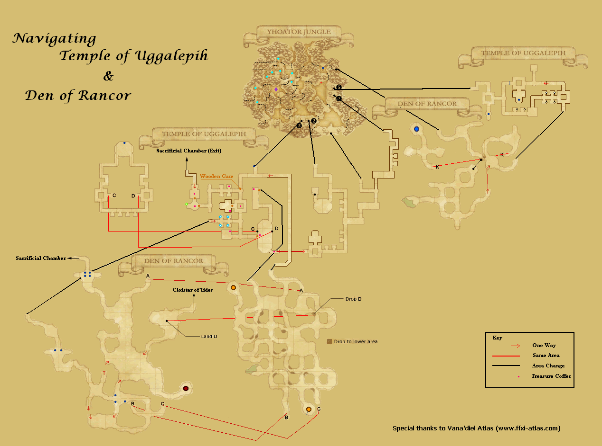
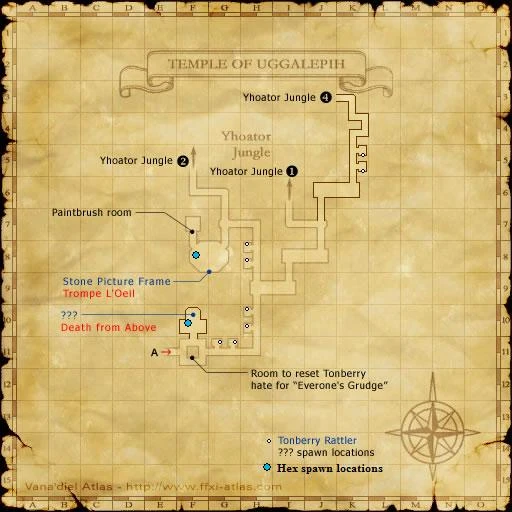
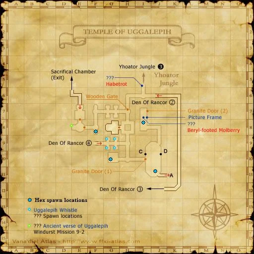
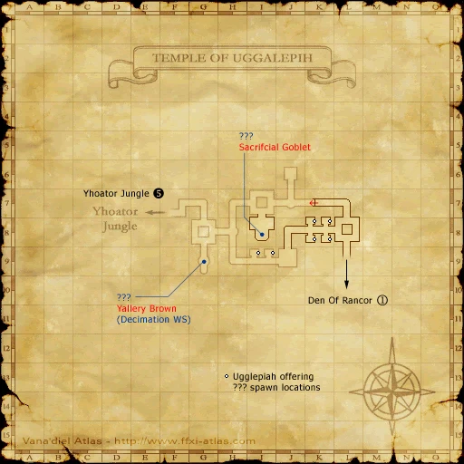
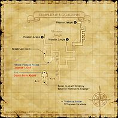
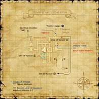
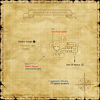
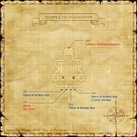

Description
Temple of Uggalepih is a dungeon in Elshimo Uplands.
Map

Involved in Quests / Missions
| Quest / Mission | Type | Starter | Location |
|---|---|---|---|
| A Question of Taste | General | Jakoh Wahcondalo | Kazham (J-9) |
| Axe the Competition | Weaponskill | Brutus | Upper Jeuno (G-7) |
| Borghertz's Calling Hands | SMN AF | Guslam | Upper Jeuno (H-8) |
| Borghertz's Loyal Hands | SAM AF | Guslam | Upper Jeuno (H-8) |
| Everyone's Grudge | Tonberry Hate | Magephaud | Norg (I-8) |
| Everyone's Grudging | General | Jakoh Wahcondalo | Kazham (J-9) |
| Knight Stalker | DRG AF | Rahal | Chateau d'Oraguille (H-9) |
| Paintbrush of Souls | Key Item | --- | --- |
| The Opo-opo and I | General | Lulupp | Kazham (G-7) |
| You Call That a Knife? | General | Mhebi Juhbily | Kazham (I-10) |
NPCs
| Name | Location | Type |
|---|---|---|
| Cook Balberry | — | — |
| Cook Fulberry | — | — |
| Cook Minberry | — | — |
| Cook Solberry | — | — |
| Chef Nonberry | G-10 | Quest NPC |
| Patissier Linberry | G-10 | — |
| Plongeur Monberry | G-10 | — |
| Tonberry Priest | F-11 | — |
Notorious Monsters


Regular Monsters


Event Monsters
| Name | Level | Drops | Steal | Family | Spawns | Notes |
|---|---|---|---|---|---|---|
| Cleuvarion M Resoaix | — | — | — |  ShadowsImage source ShadowsImage source | 1 | Spawned Quest: Knight Stalker; A, L, H, HP |
 MimicImage source MimicImage source | — | Uggalepih Coffer Key | — | Mimics | — | Failed coffer pick |
| Nio-A | — | — | — | DollsImage source | 1 | Spawned Mission: Lightbringer; A, L, M |
| Nio-Hum | — | — | — | DollsImage source | 1 | Spawned Mission: Lightbringer; A, L, M |
| Rompaulion S Citalle | — | — | — | ShadowsImage source | 1 | Spawned Quest: Knight Stalker; A, L, H, HP |
| Trompe L'Oeil | 59 | — | — |  GolemsImage source GolemsImage source | 1 | Spawned Quest: A Question of Taste; A, S, M |
| Yallery Brown | 80 | — | — |  SaplingsImage source SaplingsImage source | 1 | Spawned Quest: Axe the Competition; A, L, H |
Maps




Story walkthroughs in this area
| Story | Mission / quest |
|---|---|
| RoZ 3 | Kazham’s Chieftainess |
| RoZ 4 | The Temple of Uggalepih |
| RoZ 5 | Headstone Pilgrimage |
| ASA 12 | Sisters in Arms |
References
External references describe their own server or retail rules. Documented Zenith changes take precedence.
Map credits: Map 1 — HorizonXI Wiki · Map 2 — HorizonXI Wiki · Map 3 — HorizonXI Wiki · Map 4 — HorizonXI Wiki · Map 5 — HorizonXI Wiki. Original game maps © SQUARE ENIX; redrawn maps retain the credited authorship and license.


Additional level-75 reference








|
Hidden deep within the dense jungle of Eastern Elshimo lies a dark, ancient temple. While it is not known by whom, or for what reason this temple was built, it is currently occupied by the Tonberries, who use it as a place to worship the evil deity Uggalepih. The local Mithra fear this "temple of misery," and advise that all keep their distance. The technology used to construct its walls and pillars suggest that a high level of civilization was once centered in the surrounding jungles. However, nature has taken its course over the centuries, and now giant trees and plants slowly eat away at this once mighty structure. Connecting AreasInvolved in Quests/Missions
| ||||||||||||||||||||||||||||||||||||||||||||||||||||
NPCs Found Here
Fishing
|
Weather
Coffer/Chest Contents
| |||||||||||||||||||||||||||||||||||||||||||
Notorious Monsters Found Here
|
Name |
Level |
Drops |
Steal |
Family |
Spawns |
Notes | |||||||
Beryl-footed Molberry
|
Unknown | Tonberry |
1 |
A, L, S | |||||||||
| Bonze Marberry | 66 - 66 | Tonberry |
1 |
||||||||||
Cleuvarion M Resoaix
|
Unknown | Shadow |
1 |
A, L, H, HP | |||||||||
Crimson-toothed Pawberry
|
70 - 70 | Tonberry |
1 |
A, L, S | |||||||||
Death from Above
|
62 - 62 | Bee |
1 |
A, L, S, Sc | |||||||||
| Flauros | 59 - 60 | Coeurl |
1 |
A, S, Sc | |||||||||
Habetrot
|
57 - 59 | Crawler |
1 |
A, L, S, Sc | |||||||||
| Manipulator | Unknown | Doll |
1 |
A, L, M | |||||||||
Mimic
|
Unknown | Mimic | |||||||||||
Nio-A
|
Unknown | Doll | 1 | A, L, M | |||||||||
Nio-Hum
|
Unknown | Doll | 1 | A, L, M | |||||||||
Rompaulion S Citalle
|
Unknown | Shadow |
1 |
A, L, H, HP | |||||||||
Sacrificial Goblet
|
66 - 68 | Magic Pot |
1 |
A, M | |||||||||
Sozu Rogberry
|
65 - 66 | Tonberry |
1 |
A, L, S | |||||||||
| Sozu Sarberry | 66 - 66 | Tonberry |
1 |
A, L, S | |||||||||
| Sozu Terberry | 65 - 65 | Tonberry |
1 |
A, L, S | |||||||||
| Temple Guardian | 65 - 65 | Doll |
1 |
A, M | |||||||||
| Tonberry Kinq | 65 - 65 | Tonberry |
1 |
A, L, S | |||||||||
Trompe L'Oeil
|
59 - 59 | Golem |
1 |
A, S, M | |||||||||
Yallery Brown
|
80 - 80 | Sapling |
1 |
A, L, H | |||||||||
|
HP = Detects Low HP; M = Detects Magic; Sc = Follows by Scent; T(S) = True-sight; T(H) = True-hearing JA = Detects job abilities; WS = Detects weaponskills; Z(D) = Asleep in Daytime; Z(N) = Asleep at Nighttime | |||||||||||||
Mobs Found Here
|
Name |
Level |
Drops |
Steal |
Family |
Spawns |
Notes | |||||||
| Bloodsucker | 55 - 57 | Leech | Spawned by Fishing | ||||||||||
| Bloodsucker | 60 - 62 | Leech | Spawned by Fishing | ||||||||||
| Bouncing Ball | 65 - 67 | Leech | Spawned by Fishing | ||||||||||
| Branding Iron | 55 - 58 | Doll | 2 | A, M | |||||||||
Fire Elemental
|
65 - 68 | Elemental | 5 | A, M | |||||||||
| Hover Tank | 64 - 67 | Magic Pot | 15 | A, M | |||||||||
| Iron Maiden | 64 - 68 | Doll | 14 | A, M | |||||||||
| Rumble Crawler | 53 - 56 | Crawler |
23 |
L, S, Sc | |||||||||
| Temple Bee | 60 - 63 | Bee |
12 |
A, L, S, Sc | |||||||||
| Temple Opo-opo | 51 - 54 | Opo-opo |
23 |
L, S, Sc | |||||||||
| Tonberry Cutter | 51 - 59 | Tonberry |
38 |
A, L, S | |||||||||
| Tonberry Dismayer | 61 - 67 | Tonberry |
11 |
A, L, S | |||||||||
| Tonberry Harrier | 51 - 59 | Tonberry |
26 |
A, L, S | |||||||||
| Tonberry Maledictor | 61 - 67 | Tonberry |
13 |
A, L, S | |||||||||
| Tonberry Pursuer | 61 - 67 | Tonberry |
14 |
A, L, S | |||||||||
| Tonberry Stabber | 61 - 67 | Tonberry | |||||||||||
| Tonberry Stalker | 51 - 59 | Tonberry |
35 |
A, L, S | |||||||||
| Tonberry's Elemental | 43 - 55 | Elemental | |||||||||||
| Torama | 55 - 58 | Coeurl |
9 |
A, S, Sc | |||||||||
| Uggalepih Leech | 50 - 52 | Leech | Spawned by Fishing | ||||||||||
Water Elemental
|
61 - 64 | Elemental | 5 | A, M | |||||||||
| Wespe | 52 - 55 | Bee |
21 |
A, L, S, Sc | |||||||||
|
HP = Detects Low HP; M = Detects Magic; Sc = Follows by Scent; T(S) = True-sight; T(H) = True-hearing JA = Detects job abilities; WS = Detects weaponskills; Z(D) = Asleep in Daytime; Z(N) = Asleep at Nighttime | |||||||||||||
Adapted from Eden Wiki: Temple of Uggalepih · Contributors and history · CC BY-SA 4.0. Revision 45854. Layout, links and optional background text adapted for Zenith.